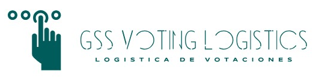

Solicitud enviada
¡Gracias por contactarnos!
Recibimos la información de tu asamblea. Revisaremos la solicitud y nos comunicaremos contigo por correo o WhatsApp.

Solicitud enviada
Recibimos la información de tu asamblea. Revisaremos la solicitud y nos comunicaremos contigo por correo o WhatsApp.